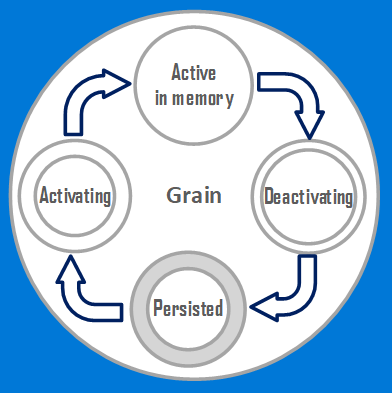

Important
You are looking at the 1.5 documentation
Orleans 2.0 is a significant overhaul from the 1.x versions. You can find 2.0 documentation here.
Grains
Grains are the key primitives of the Orleans programming model. Grains are the building blocks of an Orleans application, they are atomic units of isolation, distribution, and persistence. Grains are objects that represent application entities. Just like in the classic Object Oriented Programming, a grain encapsulates state of an entity and encodes its behavior in the code logic. Grains can hold references to each other and interact by invoking each other’s methods exposed via interfaces.
Orleans aims to greatly simplify building a scalable application and eliminate most of the concurrency challenges
- By not sharing data between grains instances except via message passing.
- By providing the single-threaded execution guarantee to each individual grain.
A typical grain encapsulates state and behavior of a single entity (e.g. a specific user or a device or a session).
Grain Identity
An individual grain is a uniquely addressable instance of a grain type (class). Each grain has a unique identity, also referred to as a grain key, within its type. Grain identity within its type can be a long integer, a GUID, a string, or a combination of a long+string or GUID+string.
Accessing a Grain
A grain class implements one or more grain interfaces, formal code contracts for interacting with grains of that type. To invoke a grain, a caller needs to know the grain interface that the grain class implements that includes the method that the caller wants to call and the unique identity (key) of the target grain. For example, here's how a user profile grain can be called to update user's address if email is used as a user identity.
var user = grainFactory.GetGrain<IUserProfile>(userEmail);
await user.UpdateAddress(newAddress);
A call to GetGrain is an inexpensive local operation of constructing a grain reference with an embedded identity and type of the target grain.
Note that there is no need to create or instantiate the target grain. We make a call to it to update user's address as if the user's grain is already instantiated for us. This is one of the biggest advantages of the Orleans programming model - we never need to create, instantiate or delete grains. We can write our code as if all possible grains, for example millions of user profiles, are always in memory waiting for us to call them. Behind the scenes, the Orleans runtime performs all the heavy lifting of managing resources to transparently bring grains to memory when needed.
Behind the Scenes - Grain Lifecycle
Grains live in execution containers called silos. Silos form a cluster that combines resources of multiple physical or virtual machines. When there is work (request) for a grain, Orleans ensures there is an instance of the grain on one of the Silos in the cluster. If there is no instance of the grain on any silo, the Orleans runtime creates one. This process is called Activation. In case a grain is using Grain Persistence, the runtime automatically reads the state from the backing store upon activation.
Once activated on a silo, a grain processes incoming requests (method calls) from other grains or from outside of the cluster (usually from frontend web servers). In the course of processing a request a grain may call other grains or some external services. If a grain stops receiving requests and stays idle, after a configurable period of inactivity Orleans removes the grain from memory (deactivates it) to free up resources for other grains. If and when there's a new request for that grain, Orleans will activate it again, potentially on a different silo, so the caller gets the impression that the grain stayed in memory the whole time. A grain goes through the lifecycle from existing only as its persisted state (if it has any) in storage to being instantiated in memory to being removed from memory.

Orleans controls the process of activating and deactivating grains transparently. When coding a grain, a developer assumes all grains are always activated.
The sequence of key events in grain lifecycle looks like this.
- Another grain or a client makes a call to a method of the grain (via a grain reference)
- The grain gets activated (if it is not already activated somewhere in the cluster) and an instance of the grain class, called a grain activation, is created
- Constructor of the grain is executed leveraging Dependency Injection if applicable
- If Declarative Persistence is used, the grain state is read from storage
- If overridden,
OnActivateAsyncis called
- The grain processes incoming requests
- The grain remains idle for some time
- Silo runtime decides to deactivate the grain
- Silo runtime calls
OnDeactivateAsync, if overridden - Silo runtime removes the grain from memory
Upon a graceful shutdown of a silo, all grain activations it holds get deactivated. Any requests waiting to be processed in grains' queues get forwarded to other silos in the cluster, where new activations of deactivated grains get created on an as-needed basis. If a silo shuts down or dies ungracefully, other silos in the cluster detect the failure, and start creating new activations of grains lost on the failed silo, as new requests for those grains arrive. Note that detection of a silo failure takes some time (configurable), and hence the process of reactivating lost grains isn't instantaneous.
Grain Execution
A grain activation performs work in chunks and finishes each chunk before it moves on to the next. Chunks of work include method invocations in response to requests from other grains or external clients, and closures scheduled on completion of a previous chunk. The basic unit of execution corresponding to a chunk of work is known as a turn.
While Orleans may execute many turns belonging to different activations in parallel, each activation will always execute its turns one at a time. This means that there is no need to use locks or other synchronization methods to guard against data races and other multi-threading hazards.
Next
Next we look at how to implement a grain class.